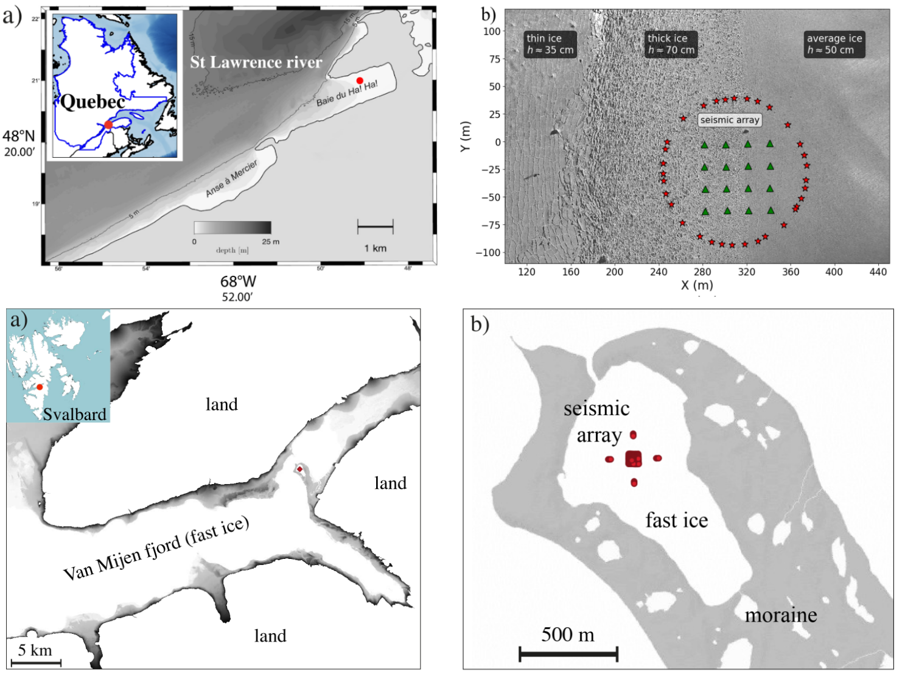
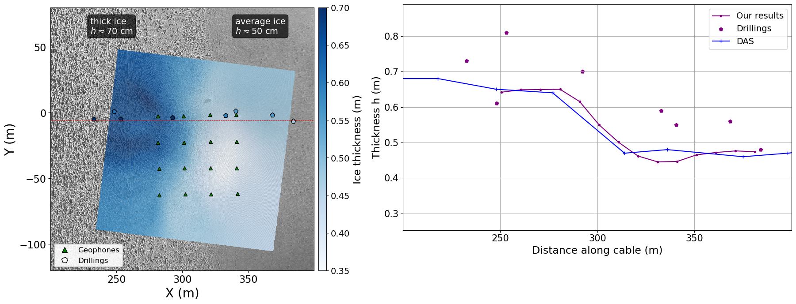
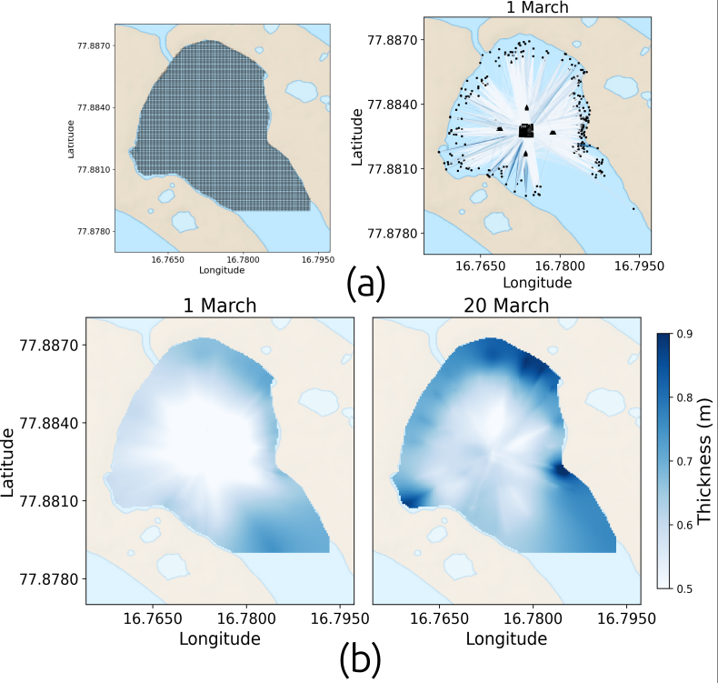
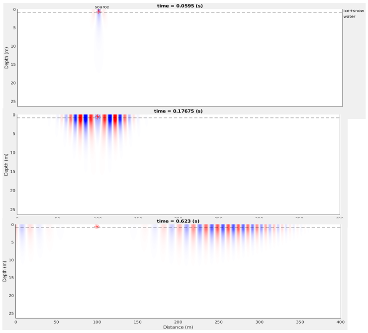
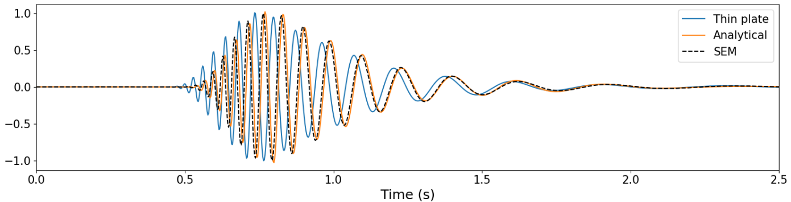
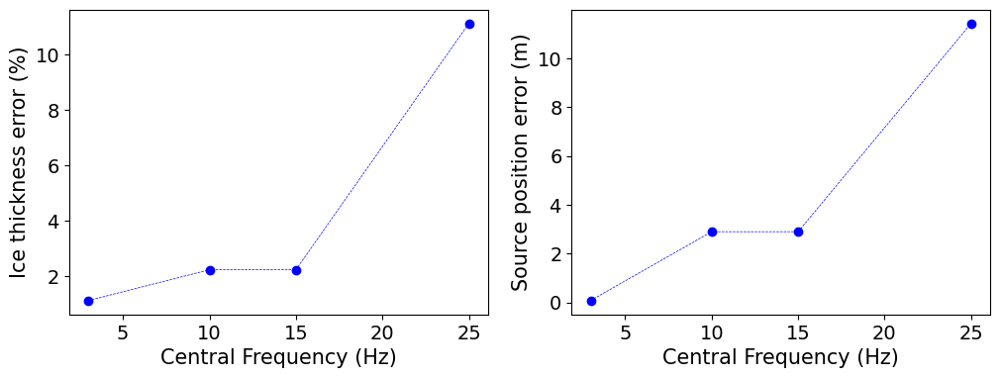
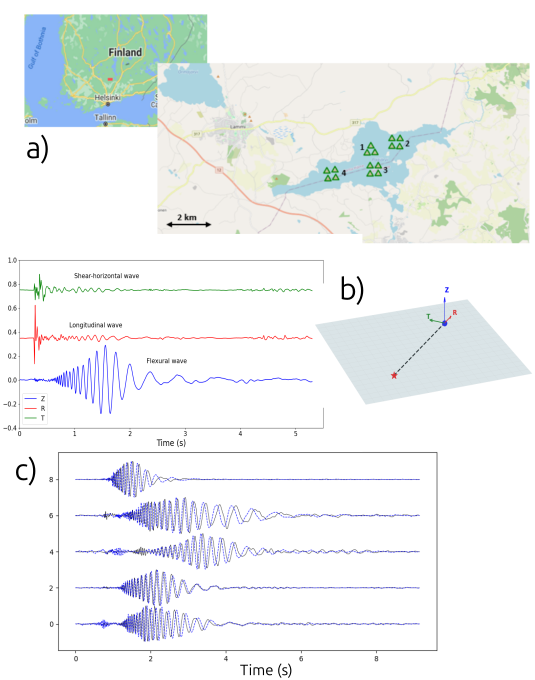
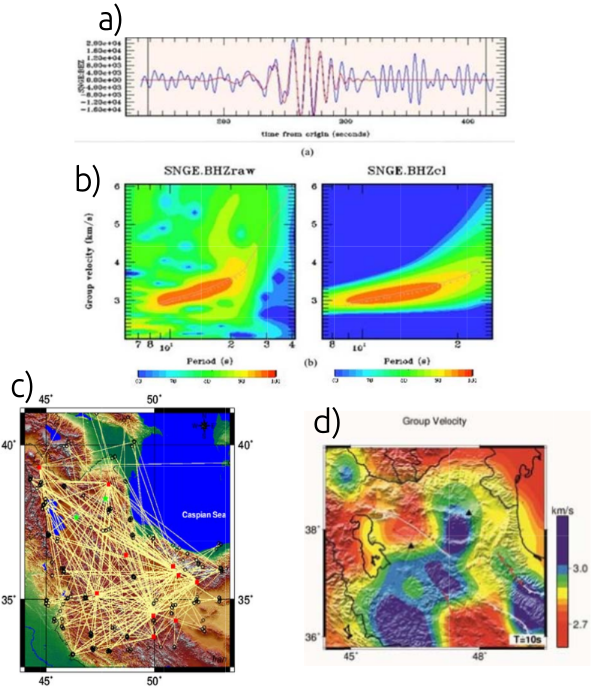

Projects
Sea Ice Thickness Reconstruction Using Icequake Waveform Inversion and Tomography
PhD Research — ISTerre, Université Grenoble Alpes (Oct. 2022 – Dec. 2025)
Objective: to reconstruct high-resolution spatial and temporal sea ice thickness maps using waveform inversion of icequake data and seismic tomography
Input Data:
- Controlled-source data (Canada): Baie du Ha! Ha!, St. Lawrence Estuary — 16 geophones (3C) + 33 hammer-shot sources along a ~60m-radius circle (Feb 2025), installed at the boundary of two ice blocks: 45±5 cm (right) and 65±5 cm (left) thickness
- Passive-source data (Svalbard): Van Mijen Fjord, Norway — 247 geophones (1C/3C): 231 in a ~50 m × 50 m square array, plus four 4-station linear arrays ~125 m from the center on each side (Feb–Mar 2019)
Workflow:
1. SEM database construction
Pre-computing waveforms using the Spectral Element Method (SEM) for a range of source-receiver distances and ice thicknesses to build a synthetic database, accelerating inversion without costly on-the-fly simulations
2. Multi-step inversion (passive data)
Simulated annealing (SA) is applied in two stages: first to estimate a constant ice thickness and source location, then with increased degrees of freedom to refine the solution and obtain path-wise ice thicknesses. A final grid search is then performed to estimate all path-wise thicknesses across the network using previously localized events.
Note: For active-source experiments, only the grid search step is applied, as source locations are already known.
3. 2D tomographic inversion
Solving the minimization problem:
- h: unknown ice thickness
- hobs: observed path-averaged thickness
- A: ray-path matrix
- hprior: prior model (e.g., previous day or drillings)
- L: Laplacian smoothing operator
- α, β: regularization weights
Key results:
- Active source (Canada): Recovered sharp 45–65 cm thickness contrast across the array. Validated against drilling data (bias attributed to soft porous bottom layer) and DAS-based estimates (Kuchly et al., 2026)
- Passive source (Svalbard): Daily tomography over 25 days using >5,300 icequakes. Captured 10–15 cm thickness growth over time, with thicker ice near shorelines and spatial variability. Validated against drillings and Serripierri et al. (2022)
Skills:
Supervisors: Ludovic Moreau, Ludovic Métivier, Romain Brossier
Publication: Zandi et al. (2026), EGUsphere

Figure 1: (Above) Active-source experiment. a) Location of experiment on the St. Lawrence Estuary (Canada); red dot indicates the site. b) Aerial photograph of fast ice showing geophones (green triangles) and controlled sources (red stars) (data from Kuchly et al., 2025). (Bottom) Natural-source experiment: Van Mijen Fjord in Svalbard (Norway), showing the array of geophones for the passive experiment (for details on the array and experiment, refer to Moreau et al., 2020a).

Figure 2: Results of the tomographic inversion of the active-source data recorded on 10 February 2025 in Canada. (Left) 2D map of the ice thickness and (right) cross-section of the tomography along the red dotted line (purple solid line), for comparison with thicknesses from Kuchly et al. (2026) by inverting Distributed Acoustic Sensing seismic data (dotted blue line) and drillings (filled circles).

Figure 3: Results of the tomographic inversion of the natural-source data recorded in February and March 2019 in Svalbard. (a) The mesh used for the tomography is shown on the left, while on the right we see an example of path coverage for March 1. (b) Daily tomography maps, here the results shown for March 1 and 20, providing spatial and temporal changes in ice thickness.
Sensitivity of Guided Seismic Waves in Sea Ice to Overlying Snow Layer Thickness
M2 Research Internship — ISTerre, Université Grenoble Alpes (Feb. – July 2022)
Objective: To model guided-wave propagation in sea ice using spectral-element simulations and assess the limitations of thin-plate approximations, particularly their inability to account for overlying snow layers and to accurately describe wave propagation at high frequencies
Workflow:
- Spectral element method for 2D coupled acoustic-elastic wave modeling in layered ice-water and ice-water-snow systems
- Compare SEM and thin-plate models: first, validate the SEM simulations against analytical solutions for a simple reference case to confirm their accuracy. Then, simulate waveforms for ice and ice-snow systems using sources with different central frequencies and compare them against waveforms generated by the thin-plate (asymptotic) approximation. The comparison shows that while SEM matches the analytical solutions, the thin-plate waveforms deviate from the SEM waveforms in the presence of a snow layer, and this deviation becomes more pronounced as the source frequency increases. For example, Figure 2 illustrates this comparison for an ice-water system (no snow) with a 1 m ice layer and a 15 Hz Ricker wavelet source, clearly showing the discrepancy, particularly at high frequencies.
- Sensitivity analysis - inversion biases: use SEM simulations as ground truth (with known ice thickness and source location) and invert for these parameters using an inversion scheme based on Simulated Annealing and MCMC, where synthetic waveforms are generated from thin-plate models. Evaluate how the estimates of ice thickness and source location are biased when a snow layer is present and at higher frequencies. Again, Figure 3 shows the results for a simple case of an ice-water system, demonstrating that both ice thickness and source distance are increasingly underestimated as the peak frequency of the source wavelet increases (tested for 5, 10, 15, and 25 Hz Ricker wavelets).
Skills:
Supervisors: Ludovic Moreau, Ludovic Métivier, Romain Brossier

Figure 1: Wave propagation simulation in a floating ice (+ snow) layer for a source located in ice, at three different times, using an efficient fluid–solid coupled spectral-element solver (Cao et al., 2021).

Figure 2: Comparison of SEM and thin-plate (asymptotic) waveforms for an ice-water system (1 m ice, 15 Hz Ricker source, recorded at the distance of 300 m from the source). The thin-plate approximation deviates from the SEM solution, particularly at high frequencies.

Figure 3: Sensitivity analysis for ice thickness and source location using thin-plate models against SEM ground truth. Both parameters are increasingly underestimated as the source peak frequency increases (5–25 Hz).
Analysis of Icequakes to Characterize Lake Ice
M1 Research Internship — ISTerre, Université Grenoble Alpes (June – July 2021)
Objective: to analyze icequake signals recorded on Lake Pääjärvi (Southern Finland) and apply inversion methods to estimate ice properties (elastic constants, thickness) and source locations
Workflow:
- Extraction of icequakes from passive seismic data
- Estimating elastic constants from horizontal channels using array processing
- Stochastic waveform inversion (MCMC and SA) based on minimization of the misfit between observed and synthetic data to derive a constant ice thickness (between the source and stations) and source location (Moreau et al., 2020b)
Synthetics: flexural waveforms generated numerically using thin-plate theory; observed data: flexural waves recorded on the vertical channel
Skills:
Supervisor: Ludovic Moreau

Figure 1: Example of icequake waveforms (b) recorded on Lake Pääjärvi, Southern Finland (a). Horizontal channels (R and T) are used for the estimation of elastic constants; vertical channel (Z) is used for stochastic inversion of ice thickness and source location. (c) Example of fit between synthetic data (blue) and observed data (dashed) for the best model parameters found (source location and ice thickness) in the inversion.
2D Surface Wave Tomography of NW Iran from Local Earthquakes and Ambient Noise
Master's Research Internship — Institute of Geophysics, University of Tehran (Jan–Aug 2014)
Objective: to construct 2D Rayleigh-wave group-velocity maps from local earthquake and ambient noise data in NW Iran for imaging the crust and uppermost mantle and to investigate regional tectonic processes
Workflow:
- Data and preprocessing: local earthquakes + noise correlation functions (vertical component: Rayleigh waves)
- Dispersion measurement (FTAN): extraction of Rayleigh wave group velocity dispersion curves
- Path selection: quality control of dispersion measurements based on travel time residual
- 2-D linear inversion (Ditmar & Yanovskaya): to obtain Rayleigh wave group velocity maps for each period (from 2-70 s)
- Resolution assessment and interpretation
Skills:
Supervisor: Habib Rahimi

Figure 1: (a) Example waveform record showing the raw signal and the extracted fundamental-mode signal (red). (b) FTAN images (frequency–time representations) of the raw signal (left) and the extracted fundamental-mode signal (right). (c) Ray-path coverage at a period of 10 s and the corresponding tomographic map (d).